Step 5: Test Case Generation
Contents
Introduction
In this section, we are going to collect coverage on our partial coverage test harness model with near 100% MCDC coverage. We are going to save the coverage information, and ask Simulink Design Verifier to ignore the already satisfied objectives and generate test cases that cover the missing coverage objectives.
This step is a prerequisite to the next step Code Verification where we will see the need for input test vectors with 100% coverage to support equivalence testing. In our previous step we were able to iteratively add more test cases to achieve 100% coverage. On a more complex model or with limited time, test generation is often used to "top-off" the manually create test vectors with generated test vectors to get to 100% coverage.
Verification and Validation Tools Used
- Simulink Verification and Validation
- Simulink Design Verifier
Run Functional Test Cases and Collect Existing Model Coverage
As we said in the introduction we will be using our partial coverage test harness model with (14) test cases. The coverage settings for this model have been configured to be the same as before, except we need to check that the cumulative coverage information is being saved to the workspace. This will be used by Simulink Design Verifier to only create test vectors that add to the existing model coverage.
Do the following:
1. Open the CruiseControl_Coverage_Harness model - click here.
The Cruise Control model has all the bug fixes including the logic issue. So the test generation will be run on a production ready model. Review the model to confirm the model has been configured as described above.
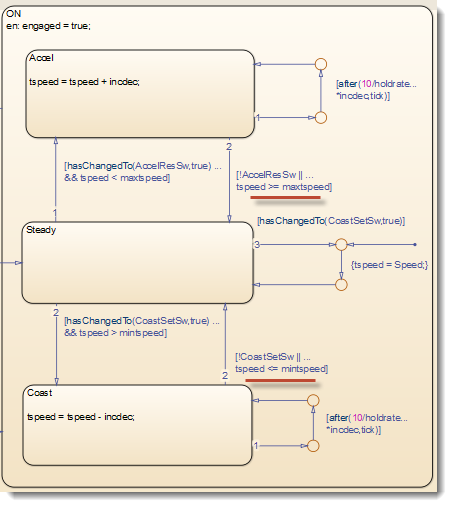
The cumulative coverage will be saved into a data object in the workspace called "covCumulativeData".
2. Go to Analysis, Coverage and Settings. Verify the name of the data object in the Results tab of Coverage Settings options (see picture below).
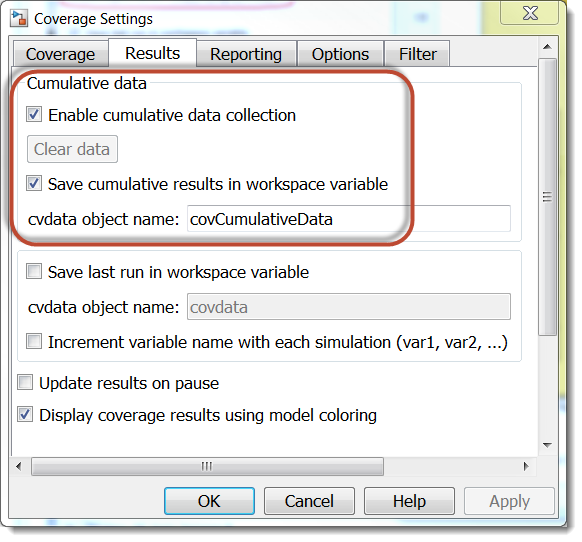
3. To get the cumulative coverage for the (14) test cases, run all test cases using Run All in the Signal Builder block.
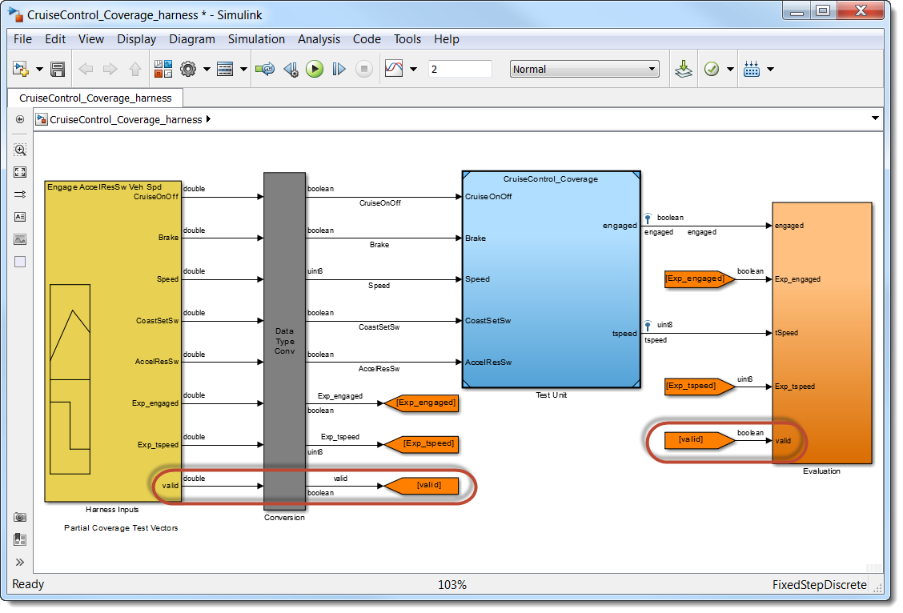
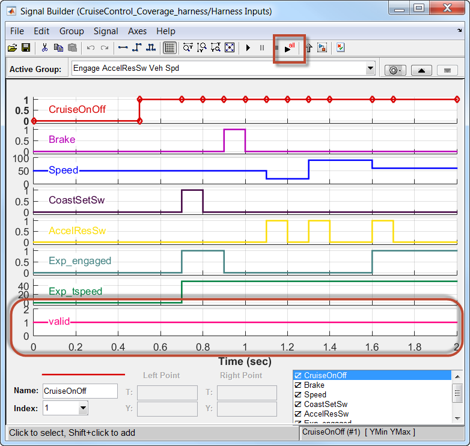
Before we look at the coverage results. We need to look at a few changes to the test harness from the previous step. A new signal has been added to the test cases in Signal Builder: valid. Also if we examine the contents of the "Evaluation" subsystem you will see how we are using this new signal in the evaluation. This has been added so we only check the outputs when the valid signal is true, otherwise we skip the output comparison check. This was included to handle the generated test cases we will create later. The generated test cases will have a time range that may be less than the manually created time vectors.
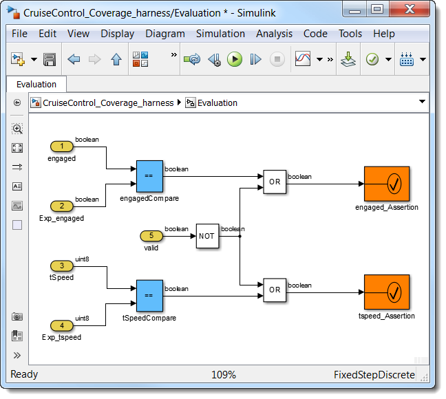
Now let's look at the coverage results. You should see the following results displayed in the generated coverage report as well as in the model using the color information:
- 92% Decision Coverage
- 81% Condition Coverage
- 63% MCDC Coverage
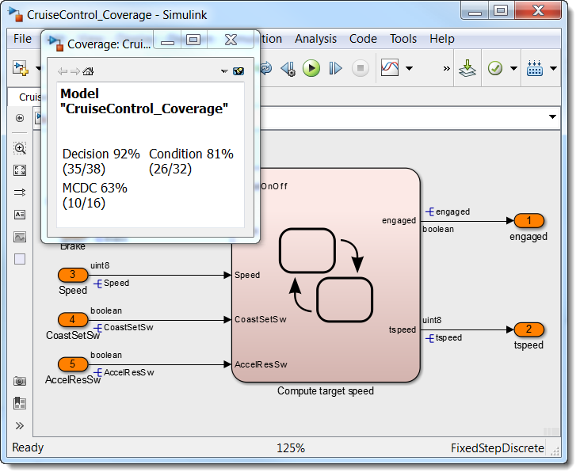
The coverage data is stored in an object in the base workspace called "covCumulativeData". To verify that the object exists and contain the coverage information, you can type the object name in at the command prompt. You should then see the following information displayed:
>> covCumulativeData
covCumulativeData = ... cvdata
id: 801
type: DERIVED_DATA
test: cvtest object
rootID: 190
checksum: [1x1 struct]
modelinfo: [1x1 struct]
startTime: 18-Aug-2015 12:10:57
stopTime: 18-Aug-2015 12:12:56
intervalStart: 0
intervalStop: 0
metrics: [1x1 struct]
filter:4. Save the coverage data object into a .cvt extension file by using the following command - or click here:
>> cvsave('cumcov_PartCvg','CruiseControl_Coverage');
cumcov_PartCvg is the name of the .cvt file, and CruiseControl_Coverage is the model name. There several other forms for this command. For information on cvsave, please consult the Help documentation.
Generate Test Cases for Missing Model Coverage
Now let’s feed the coverage information into Simulink Design Verifier and have it generate the missing test cases for 100% coverage.
1. Open the Test Unit CruiseControl_Coverage.slx – click here.
2. Go to Analysis, Design Verifier, and Options.
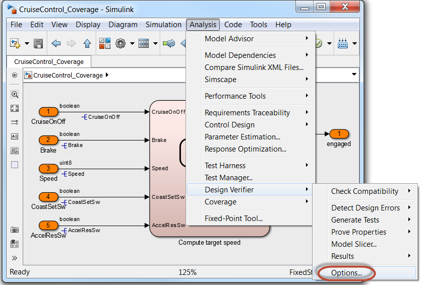
3. In the dialog that opens, go to Design Verifier and Test Generation.
4. Check "Ignore objectives satisfied in existing coverage data".
5. Set "Coverage data file" to "cumcov_PartCvg.cvt" (see picture below).
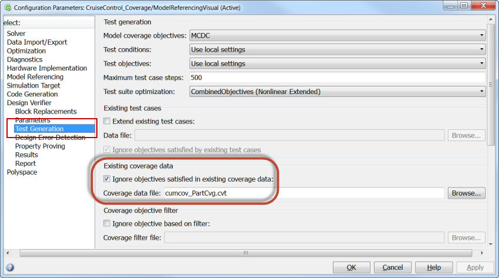
Simulink Design Verifier will generate the missing test cases but we will also configure it to generate the "expected" output values. These values are outputs that are measured with the generated test case inputs. So these expected output test vectors may not be useful for checking the current model but it will be useful for checking the generated code in the next step and for checking later versions of the model.
6. Go to the Results tab under Design Verifier.
7. Check "Save test data to file" and check "Include expected output values".
8. Click OK.
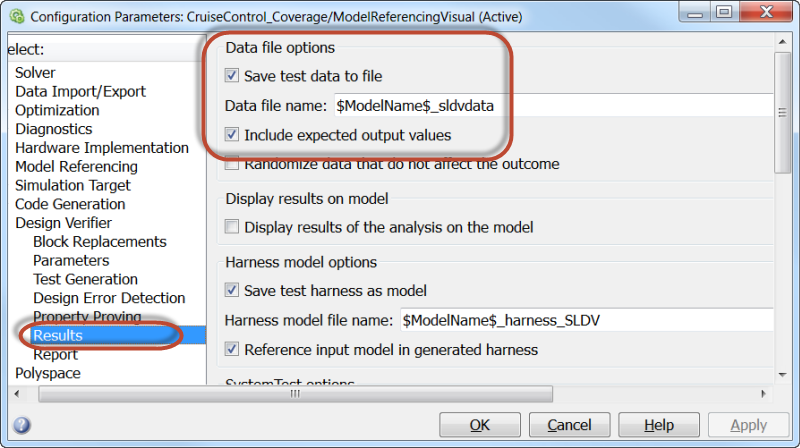
9. Go to Analysis, Design Verifier, Generate Tests, and Model. (see picture below). This will start the test case generation process.
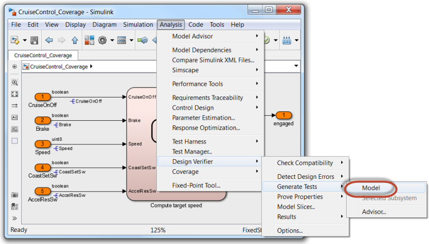
The dialog window shown below will appear. When the analysis is done, another test harness model is generated ("CruiseControl_Coverage_harness_SLDV") containing the generated test cases (see pictures below).
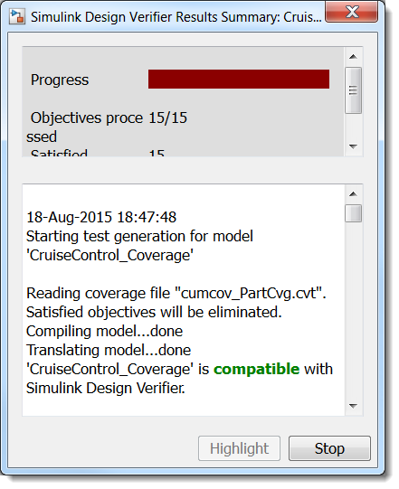
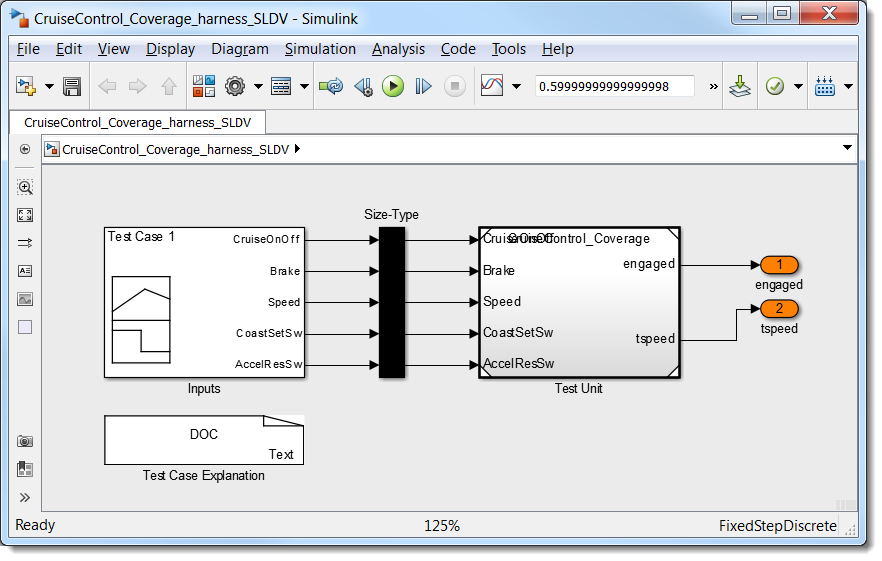
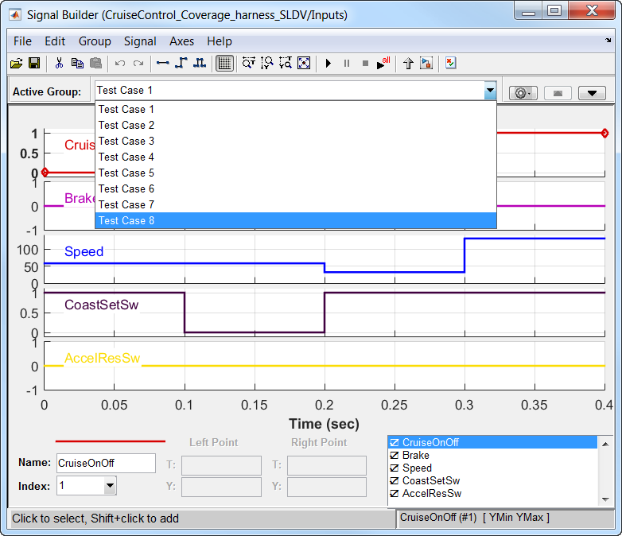
As you can see in the Signal Builder dialog, Simulink Design Verifier has generated (8) additional test cases to achieve the 100% model coverage. In the previous step we manually created (5) additional test cases but these were longer in length (2 sec) than the generated test cases.
In addition, an HTML report is generated with detailed information about the coverage objectives and the test cases satisfying them. You can access from the Simulink Design Verifier Results Inspector (see picture below).
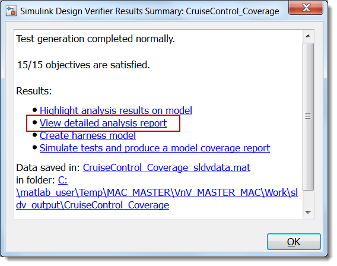
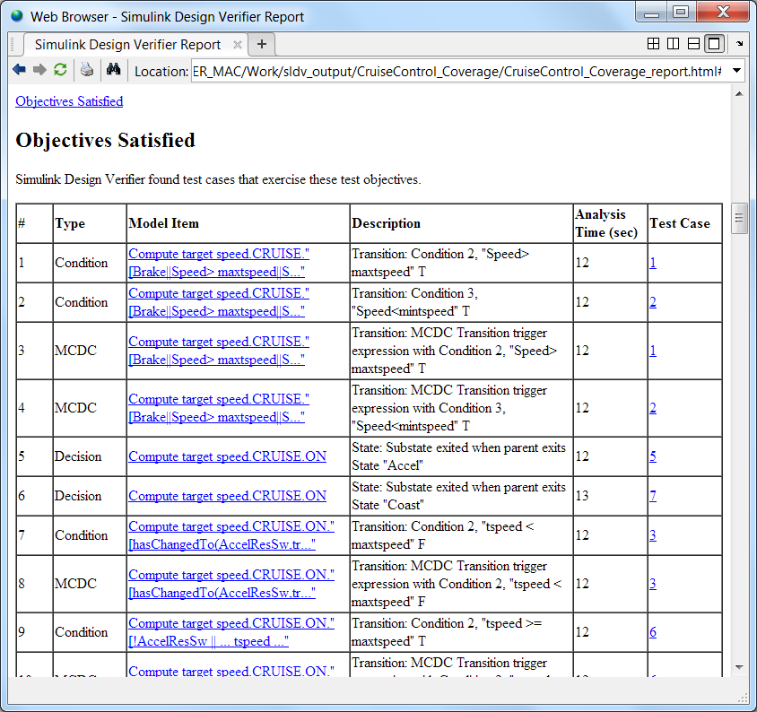
Merge Generated Test Cases with Functional Test Cases
In a typical workflow, we would use these generated test cases as hints and try to reverse engineer functional test cases from them, associate them with a requirement and create expected outputs. For now, we will see how to merge the (8) generated test cases with the existing (14) functional test cases in the original test harness. To do so, we will use the Simulink Validation and Verification function "slvnvmergeharness".
1. To merge the test harnesses, type the following command in MATLAB - or click here.
>> slvnvmergeharness('CruiseControl_Coverage_merged_harness',{'CruiseControl_Coverage_harness','CruiseControl_Coverage_harness_SLDV'});
Note: If you do this step more than once, you may need to change the name of the "sldvharness" model when you run the command above.
Now, 100% of the MCDC functional tests are all in one Signal Builder block in the model CruiseControl_Coverage_harness, see Signal Builder snapshot below. You should now be able to re-run all test cases and see 100% MCDC coverage. We will need to turn off the expected output checking because the expected outputs for the generated test cases are all zeros. In the next section we will show how to export the generated test cases with the expected outputs to a spreadsheet and then import the test cased into the original harness. But for now we can check that we have full coverage with merged harness.
Do the following:
1. Open Signal Builder block in CruiseControl_Coverage_merged_harness. If the above merge was successful you should now see all test cases here.
2. Unselect "Stop simulation when assertion fails" for both "assertion" blocks.
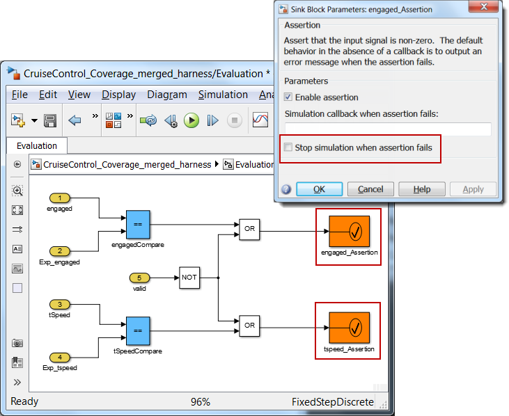
3. Click Run All. This will run all test cases and collect coverage (see picture below).
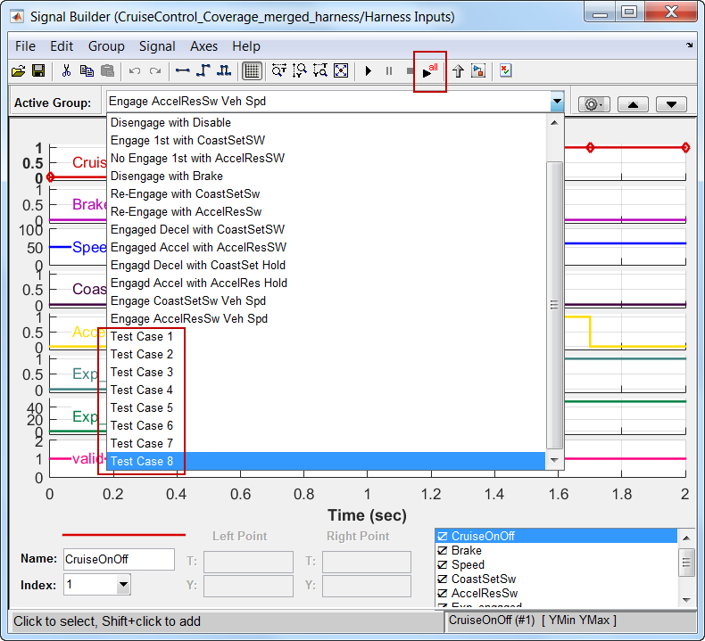
You should now see that the test cases have coverged 100% of the Test Unit - CruiseControl_Coverage. This is seen from the green color of the model and from the generated coverage report (see pictures below).
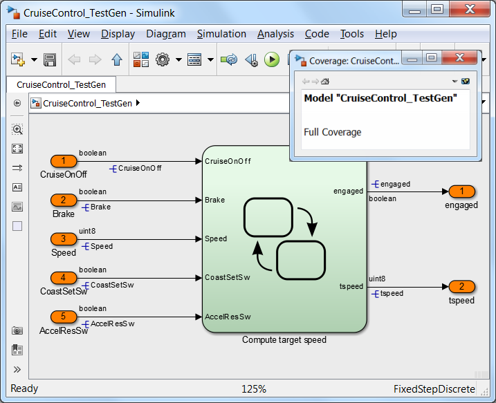
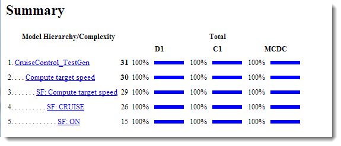
Adding Expected Outputs to the Generated Test Cases
When the test cases were generated the results were saved to a data file, CruiseControl_TestGen_sldvdata.mat. The data file contains the sldvData object. Let's a look at the object contents:
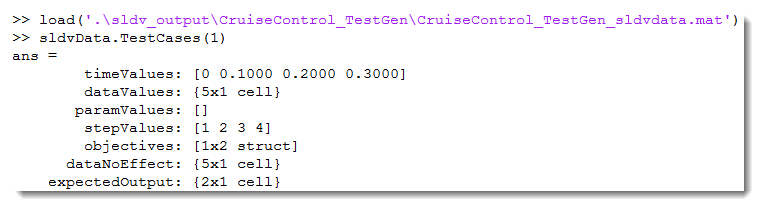
A script has been created to extract the contents from the sldvData object including the signal names, input vectors and expected output vectors. In addition the valid signal described earlier has been added to turn off the comparison of the outputs to the expected outputs at non-critical times during the test execution. Each test case is represented in the spreadsheet as a separate worksheet, ready for importing into Signal Builder block in the test harness.
Do the following:
1. To export the generated test cases to the spreadsheet, type the following command in MATLAB - or click here.
>> saveSLDVdataToXLS('./sldv_output/CruiseControl_Coverage/CruiseControl_Coverage_sldvdata.mat')
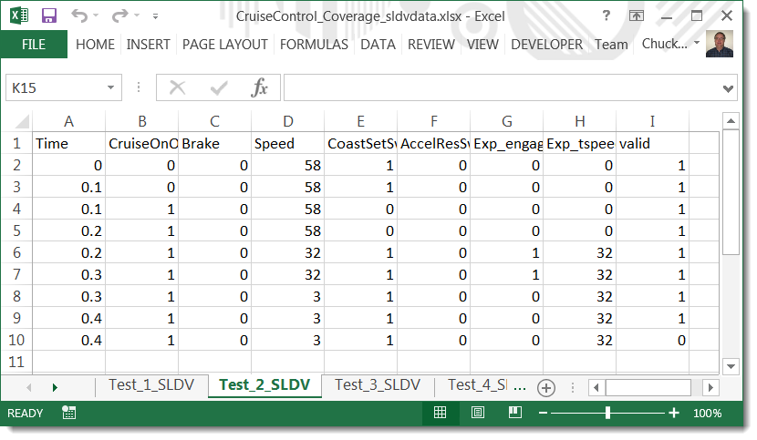
2. Close all models and re-open the CruiseControl_Coverage_Harness model - click here.
3. Open the Excel file externally that contains the SLDV test vectors - click here.
4. Manually remove the default worksheets: "Sheet 1", "Sheet 2" and "Sheet 3".
5. Open the Signal Builder block and import the generated test cases. Select File, then Import from File... to open the Import File dialog.
6. In the Import File dialog, under Select file import, click Browse, select CruiseControl_Coverage_sldvdata.xlsx file. The spreadsheet will be located in the current directory with the name, CruiseControl_Coverage_sldvdata.xlsx.
7. Follow the order of buttons/selections as shown below to finish importing the SLDV data into Signal Builder:
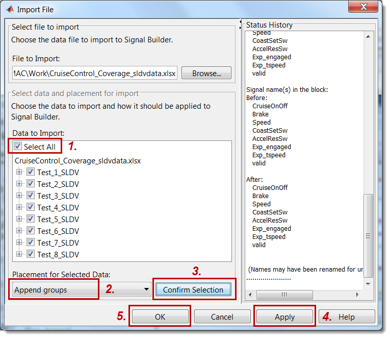
8. Click Run All. This will run all test cases, compare outputs to the expected outputs, and collect coverage (see picture below).
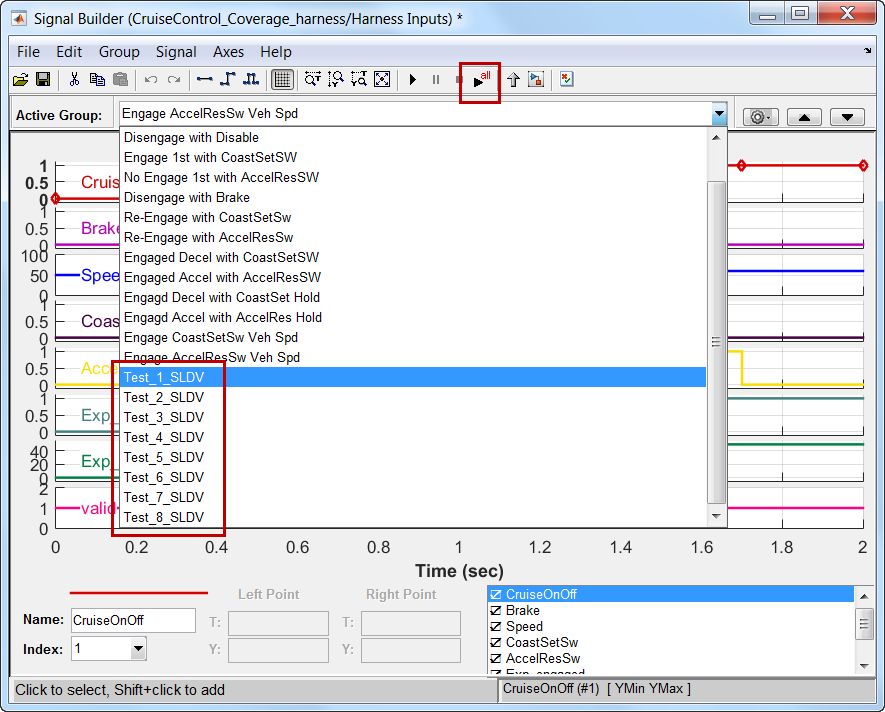
The 100% coverage tests have run successfully without an assertion stopping the simulation, so all tests are passing. The Simulation Data Inspector may be used to inspect the results as shown below:
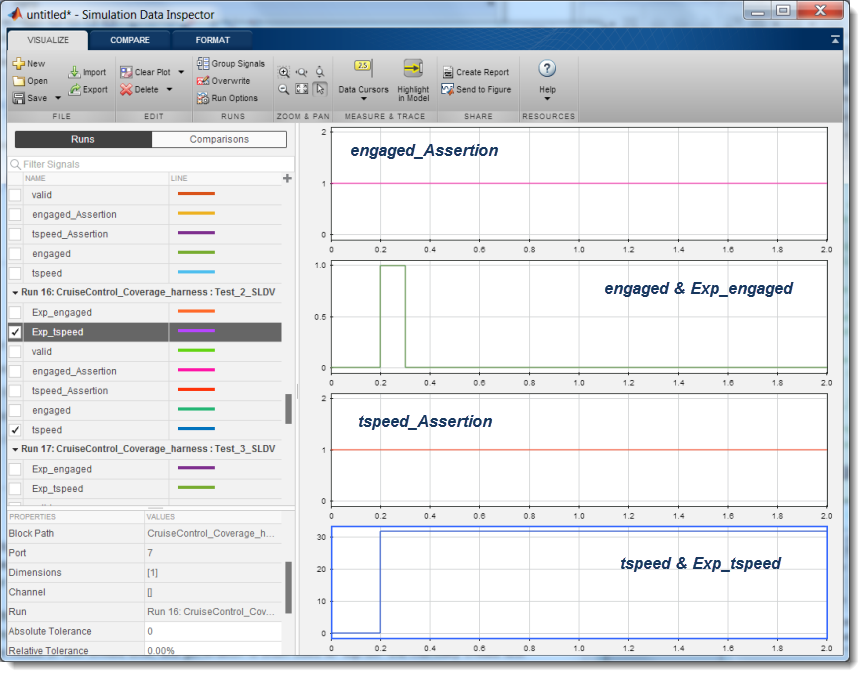
Summary
We demonstrated the "top-it-off" workflow where coverage information from the partial coverage, requirements based tests are merged with generated test cases to achieve 100% coverage. Simuink Design Verifier was configured to use the partial coverage data file to only create test cases necessary to achieve the 100% coverage goal. The flexibility of the test evaluation was improved with the ntroduction of the valid signal that enabled the test output to only be evaluated during critical stages and ignored for the remainder. The valid strategy could be used for to reduce test creation effort, where the outputs only need to match for a portion of the test execution time.
We now have a test harness with 100% coverage, test vectors that can be used to evaluate newer versions of the implementation. This harness will also be re-used in the next step Code Verification to compare outputs of the model to the generated code.
- When you are finished, close all models and files - or click here.
- Go to Step 6: Code Verification - click here.